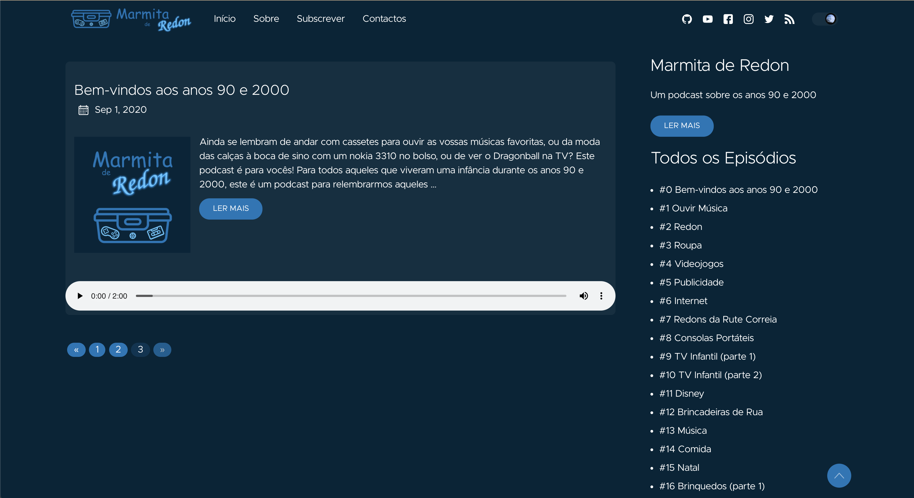

name: inverse layout: true class: center, middle, inverse --- name: impact layout: true class: center, middle, impact, content --- name: title layout: true class: title center --- name: content layout: true --- template: title name: main-title .content[ <br><br><br><br><br><br><br><br><br><br><br><br> ### Nos bastidores do podcast .small[ ou "como criar e manter um podcast a custo zero com Software Livre" ] ] --- # Sobre mim ## Tiago Carreira .left-column[ - Lisboa 🇵🇹 → Rio de Janeiro 🇧🇷 - Engenheiro DevOps<br> - Hobbies: .small[ - Desporto (correr, bicicleta, escalada) - Música (clarinete, flauta, piano, guitarra) - Produção audiovisual (fotografia, vÃdeo, **podcast**) - Open Source <br><br><br><br> ] ] .rigth-column[ .center.pic-circle[ <!-- TODO: fix pic --> <img src="img/tcarreira.jpg" width="180"> ] .center.no-bullets.tiny[ **site:** tiago.carreira.pw<br> **telegram:** @tcarreira<br> **github:** github.com/tcarreira<br> **twitter:** @tiagogcarreira ] ] --- layout: false template: impact name: agenda # Agenda - .not[Criação do podcast] - .not[Gravação e captura] - .not[Edição sonora] - Website - Publicação - Automatização --- template: impact name: revisao # O que é um podcast Revisão --- # O que é um podcast - Ouvinte usa um Podcatcher (Spotify, iTunes, AntennaPod, cPod, gPodder, VLC, etc...) - Podcatcher lê **Feed RSS** do podcast - metadados sobre o podcast e todos os episódios - Podcatcher faz **download do áudio** através do link disponibilizado no Feed RSS - Ouvinte ouve o episódio :) ??? - RSS Feed - Audio alojado em servidores --- template: impact name: website # Website --- # Website .left-column[ - Necessidades - visualmente simples - listar artigos (episódios) com imagem - suporte mobile - suporte de RSS feeds para podcast - nice-to-have: tema escuro - Hugo - geração de HTML estático - tema: [hugo-redon-podcast](https://github.com/marmita-de-redon/hugo-redon-podcast) <br> - fork de [hugo clarity](github.com/chipzoller/hugo-clarity) - baseado no [VMware Clarity design](https://clarity.design/) - Alojamento com Github Pages ] .right-column.center[ <br><br><br><br><br><br> <img height="80px" src="img/hugo-logo-wide.svg"> <div> Clarity Design System </div> ] --- # Website .center[  <img height="400px" style="border: 2px solid #2db4fd;" src="img/website-mobile.png"> ] --- # Website .left-column.tiny[ ``` . ├── config │ └── _default │ └── menus │ └── menu.pt.toml ├── config.toml ├── content │ ├── _index.md │ ├── contactos.md │ ├── feed │ │ └── podcast │ │ └── _index.md │ ├── post │ │ ├── _index.md │ │ ├── s01e00.md │ │ ├── s01e01.md │ │ ├── s01e02.md │ │ ├── s01e03.md │ │ ├── s01e04.md │ │ ├── s01e05.md │ │ └── ... │ ├── sobre.md │ └── subscrever.md ├── data │ └── social.yaml └── ... ``` ] .right-column.tiny[ ```yaml +++ title = "#16 Brinquedos (parte 1)" itunes_title = "Brinquedos (parte 1)" episode = 16 podcast_file = "https://media.blubrry.com/marmitaderedon/archive.org/download/marmitaderedon-s01e16/s01e16-brinquedos_1.mp3" podcast_duration = "0:19:30" podcast_bytes = "28091404" author = "Marmita de Redon" date = "2021-01-01" description = "Pega-monstros, berlindes, tazos, tragabolas... Qual era o vosso brinquedo de eleição? " thumbnail = "images/s01e16.jpg" featured = false aliases = ["s01e16", "S01E16", "16"] +++ Na altura em que a internet ainda era uma miragem, esta malta brincava com coisas analógicas, feitas de um plástico duvidoso dos anos 90. Yo-yo’s ou diábolos entretinham-nos por horas e os pega-monstros eram o terror das raparigas no recreio. ## Atribuição e licenças - **Produzido por:** Joana Sanches, Marco Seabra, Tiago Carreira e Tiago MaurÃcio. - **Editado por:** Tiago Carreira. - **Música**: [Redon dos 90](https://archive.org/details/redon90) de Tiago Carreira, está licenciada nos termos da [Licença Creative Commons - Atribuição 4.0 Internacional](http://creativecommons.org/licenses/by/4.0/). Este episódio está licenciado nos termos da [Licença Creative Commons - Atribuição-SemDerivações 4.0 Internacional](https://creativecommons.org/licenses/by-nd/4.0/) (CC BY-ND 4.0). ``` ] --- # Alojamento do website - Github Pages .left-column[ - suporta html estático (e mais algumas coisas) - (relativamente) fácil - permite domÃnio próprio - HTTPS automático (mesmo para domÃnio próprio) - sem manutenção - gratuito <br><br> ### Alojamento de ficheiros áudio .center[ <img src="img/internet-archive.svg" height="60px"> ] ] .right-column[ <img height="400px" src="img/gh-pages.png" > ] --- template: impact name: publicacao # Publicação --- # Publicação .left-column[ - gravar - editar - criar os textos para a descrição - criar novo thumbnail - upload dos ficheiros para o Archive.org - criar novo vÃdeo (para youtube) - criar novo artigo (markdown) - atualizar o site ] --- # Fluxo de Publicação .center[ <img height="450px" src="img/fluxo_publicação.drawio.svg"> ] --- # Publicação .left-column[ - gravar - editar - criar os textos para a descrição - .not[criar novo thumbnail] - .not[upload dos ficheiros para o Archive.org] - .not[criar novo vÃdeo (para youtube)] - .not[criar novo artigo (markdown)] - .not[atualizar o site] ] .right-column[ - gravar - editar - criar os textos para a descrição - **chamar um script que automatiza tudo** * .tiny[ <br><br><br><br><br><br><br><br><br> \* com exceção das redes sociais ] ] ??? limitações na API do youtube, mas existe solução https://github.com/ubuntupodcast/podpublish#youtube-api --- template: impact name: automatizacao # Automatização --- # Automatização ```bash function .main() { .check_pre_requisites .print_and_check_info .generate_thumbnail .upload_audio_to_archive_org .render_video .upload_to_youtube .create_markdown_file .commit_and_push_website } ``` --- # Automatização `.generate_thumbnail` .small[ ``` python create_thumbnail.py "../images/base_thumbnail.png" "${THUMBNAIL_PATH}" "#1 TÃtulo do Episódio" ``` <br> `create_thumbnail.py` ```python img = Image.open(image_source) img_rgb = img.convert('RGB') draw = ImageDraw.Draw(img_rgb) font = ImageFont.truetype("font.ttf", 300) w, h = draw.textsize(text, font=font) position = (center_x-w/2, center_y-h/2) draw.text(position, text, align="center", fill=color, font=font) img_rgb = img_rgb.resize((1024,1024), resample=Image.BICUBIC) img_rgb.save(image_dest) ``` ] <img style=" position: absolute; bottom: 140px; right: 100px; z-index: 200; border: 2px solid #2db4fd;" height="200px" src="img/s01e01.jpg" > --- # Automatização `.upload_audio_to_archive_org` .small[ ``` ./ia upload "${ARCHIVE_ORG_IDENTIFIER}" \ "${AUDIO_PATH}" \ "${THUMBNAIL_PATH}" \ --metadata="mediatype:audio" \ --metadata="language:por" \ --retries 5 ``` ] --- # Automatização `.render_video` .small[ ``` ffmpeg \ -loop 1 \ -i "${THUMBNAIL_PATH}" \ -i "${AUDIO_PATH}" \ -shortest \ -acodec copy \ "${VIDEO_PATH}" -y ``` ] --- # Automatização `.upload_to_youtube` .small[ ``` jq -n -f "${YOUTUBE_TEMPLATE_JSON_PATH}" \ --arg title "${YOUTUBE_TITLE}" \ --arg description "${BODY_MD_TEXT}$(echo -e "\n\n")${FOOTER_MD_TEXT}" \ --arg privacystatus "${YOUTUBE_PRIVACY_STATUS}" \ --arg license "${YOUTUBE_LICENCE}" \ | shoogle execute -c "${GOOGLE_CREDENTIALS_PATH}" youtube:v3.videos.insert - -f "${VIDEO_PATH}" ``` ] .left-column.tiny[ ```json { "part": "snippet,status", "body": { "snippet": { "title": $title, "description": $description }, "status": { "license": $license, "privacyStatus": $privacystatus, "selfDeclaredMadeForKids": false } } } ``` ] .right-column.small[ nota: O shoogle usa uma API do youtube que não permite fazer agendamento de publicações.<br> Mas parece haver soluções por aÃ: https://github.com/ubuntupodcast/podpublish#youtube-api ] --- # Automatização `.create_markdown_file` .small[ .left-column[ ``` EPISODE_NUMBER=16 # number, not string TITLE="Brinquedos (parte 1)" # title without episode number. DESCRIPTION="Pega-monstros, berlindes, tazos, tragabolas... Qual era o vosso brinquedo de eleição? " # Short description AUDIO_PATH="../rendered/s01e16-brinquedos_1.mp3" # this file will be uploaded to archive.org PUBLISHED_AT="2021-01-01" # publish date. eg: 2020-01-31 BODY_MD_TEXT=" Na altura em que a internet ainda era uma miragem, esta malta brincava com coisas analógicas, feitas de um plástico duvidoso dos anos 90. Yo-yo’s ou diabolos entretinham-nos por horas e os pega-monstros eram o terror das raparigas no recreio. " ``` ``` echo "${MARKDOWN_TEMPLATE}" >"${_markdown_post_file}" ``` ] .right-column[ ``` MARKDOWN_TEMPLATE="+++ title = \"#${EPISODE_NUMBER} ${TITLE}\" itunes_title = \"${TITLE}\" episode = ${EPISODE_NUMBER} podcast_file = \"${AUDIO_URL}\" podcast_duration = \"${AUDIO_DURATION}\" podcast_bytes = \"${AUDIO_BYTES}\" author = \"${AUTHOR}\" date = \"${PUBLISHED_AT}\" description = \"${DESCRIPTION}\" thumbnail = \"${THUMBNAIL_URL}\" featured = ${WEBSITE_FEATURED} aliases = [\"${_SxxExx}\", \"${EPISODE_NUMBER}\"] +++ ${BODY_MD_TEXT} ${FOOTER_MD_TEXT}" ``` ] ] --- # Automatização `.commit_and_push_website` .small[ ``` git add "${POST_RELATIVE_PATH}" git add "${POST_IMAGE_RELATIVE_PATH}" git commit -m "Publishing s01e01.md + s01e01.jpg" git push ``` ] --- # Automatização ## Github Actions .small[ ``` jobs: deploy: runs-on: ubuntu-20.04 steps: - name: Build run: | hugo --gc --minify --cleanDestinationDir [ -f ./CNAME ] && cp ./CNAME ./public/CNAME || true [ -f ./ALIAS ] && cp ./ALIAS ./public/ALIAS || true - name: Deploy uses: peaceiris/actions-gh-pages@v3 with: github_token: ${{ secrets.GITHUB_TOKEN }} publish_dir: ./public ``` ] --- # Automatização ## Github Actions (auto-publish) .small[ ``` on: schedule: # Every Friday at 1:00 (AM) UTC - cron: '0 1 * * 5' push: branches: - main ``` ] --- template: impact # That's all folks --- # Para mais tarde ## Slides - https://tcarreira.github.io/presentations/marmita-de-redon ## Conteúdos - https://marmita.pt - https://github.com/marmita-de-redon - site: https://github.com/marmita-de-redon/website - tema: https://github.com/marmita-de-redon/hugo-redon-podcast - automatização: https://github.com/marmita-de-redon/automation --- template: title <br><br><br><br><br><br><br><br><br><br><br> .content[.align-center[ ## Obrigado ]] .center.small[ tiago.carreira.pw | github.com/tcarreira | telegram: @tcarreira .tiny[ Autoria do Podcast: Joana Sanches, Marco Seabra, Tiago Carreira, Tiago MaurÃcio ] ]